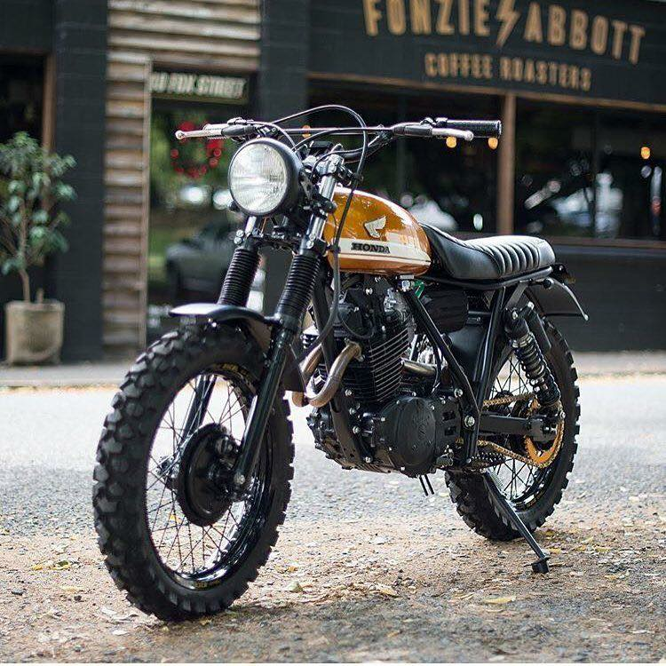
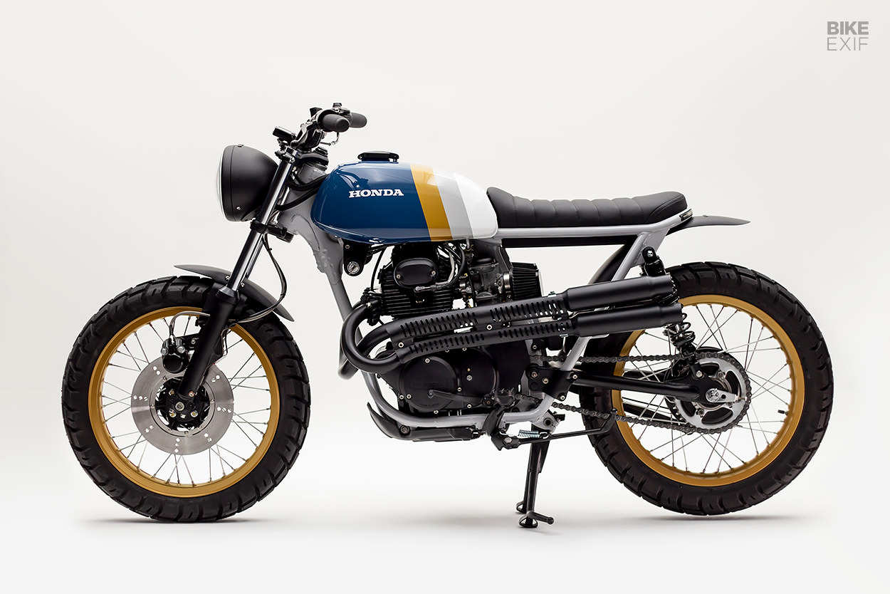

The Honda Scrambler holds a special place in motorcycle history as an emblem of rugged adventure and off-road prowess. Originating in the 1960s, the Scrambler was part of Honda's lineup aimed at riders seeking versatility and excitement both on and off the pavement. Characterized by its high-mounted exhaust, knobby tires, and raised handlebars, the Scrambler boasted a design optimized for tackling varied terrain with ease. Its lightweight frame and responsive engine made it ideal for navigating dirt trails, gravel roads, and rugged landscapes.
The Scrambler's reputation for reliability and performance quickly endeared it to riders around the world. Whether exploring remote wilderness or navigating urban streets, riders embraced the Scrambler for its versatility and durability.
Over the years, the Scrambler has evolved, with modern iterations incorporating advanced technology and refinements while staying true to its adventurous spirit. Today, the Honda Scrambler continues to captivate riders with its timeless style and unbeatable capability, carrying on the legacy of exploration and excitement that defines the iconic model.